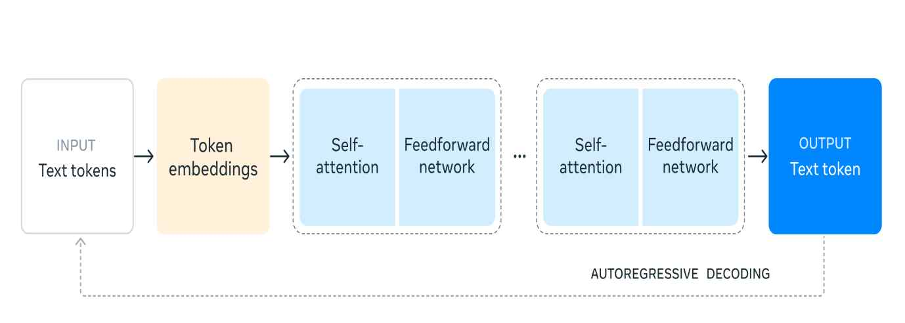
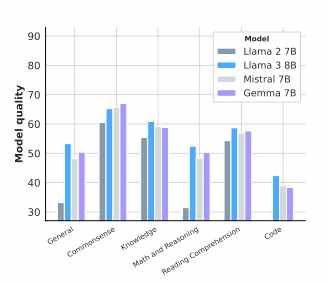
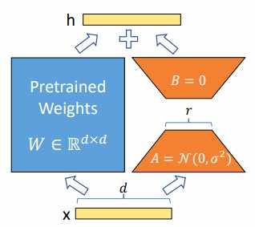
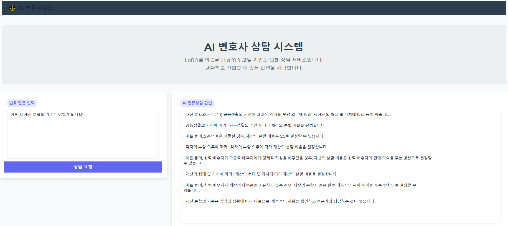

PROJECT · legal-consultation-ai
법률상담 AI
Llama 3.1 8B를 LoRA로 파인튜닝해 만든 법률상담 AI — 4인 팀 졸업작품, 대구대학교 공학제 최우수상
개요
변호사 상담은 30분에 5~10만 원, 사건 선임은 최소 100만 원대의 비용이 들고 상담 시간도 평일 근무시간에 묶여 있습니다. 한국가정법률상담소의 2024년 통계를 보면 한 해 동안 53,473건의 법률상담이 이뤄졌는데, 이 중 면접상담의 98.4%(21,929건)가 가사·민사 사건이었습니다 — 대부분의 법률상담이 여전히 상담원·변호사와의 직접 대면에 의존하고 있다는 뜻입니다. 일반적인 법률 서비스가 고비용·긴 대기시간·복잡한 절차로 이용자에게 부담을 준다는 문제의식에서, 4인 팀(김지환·김두한·김민석·신영훈, 지도교수 김희철)으로 진행한 졸업작품에서 Llama 3.1을 한국어 법률 QA 데이터로 파인튜닝해 시간·비용 제약 없이 1차 법률 자문을 받을 수 있는 챗봇을 만들었습니다. 판례나 유사 사례를 참고해 답변하는 기능도 목표로 삼았습니다. 그 결과를 보고서로 작성해 대구대학교 공학제에서 최우수상을 받았습니다.
진행 과정 — 작품 제작 흐름
Llama 3.1 모델을 로드하고, Hugging Face에 올린 법률 QA 데이터셋을 불러와 모델을 학습시킨 뒤 학습된 모델을 저장하고, 이를 웹 프로그래밍· 프론트엔드 구현과 연결해 실제로 질문을 입력하면 답변을 받을 수 있는 형태까지 만드는 순서로 진행했습니다.
- Llama 3.1 모델 로드 + Hugging Face 데이터셋 로드
- 모델 학습(LoRA 파인튜닝)
- 학습 모델 저장 및 Hugging Face 업로드
- Gradio 기반 웹 UI 구현 및 실시간 시연
개발 및 실행 환경
| 하드웨어 | Google Colab Pro, A100 GPU(VRAM 40GB), RAM 83GB |
|---|---|
| Python | 3.10 |
| 패키지 | Unsloth(FastLanguageModel), Hugging Face SFTTrainer, Transformers, Torch, TorchVision, Wandb, Gradio |
| Tools | Google Colab, Visual Studio, Jupyter Notebook, IntelliJ, Spring Boot, Bootstrap, CSS, HTML, JavaScript |
학습 가속에는 Unsloth를 사용했습니다. Colab 무료/Pro GPU에서도 Llama 3
8B급 파인튜닝이 가능하도록 만들어주는 프레임워크로, 공식 벤치마크
기준 학습 속도를 약 4~5배 끌어올리고 VRAM 사용량도 크게 줄여줍니다.
Supervised fine-tuning 자체는 Hugging Face TRL의
SFTTrainer 계열 도구로 진행했는데, 처음부터
학습하는 범용 Trainer와 달리 사전학습된 모델을
대화형 지시문-응답 형식으로 가볍게 지도학습시키는 데 특화되어 있고,
LoRA와 결합하면 적은 데이터로도 빠르게 학습할 수 있습니다.
개발 업무 분장
| 담당 | 역할 |
|---|---|
| 김지환 (팀장) | 프로젝트 관리, 유사 프로젝트·작품 탐색, 모델/데이터셋 조사, 학습 모델 코딩, 웹 프로그래밍 개발 |
| 김두한 | 모델/데이터셋 조사, 학습 모델 코딩, 모델 학습 및 테스트, 웹 프로그래밍 개발 |
| 김민석 | 모델/데이터셋 조사, 학습 모델 코딩, 모델 성능 개선 및 분석, 웹 프로그래밍 개발 |
| 신영훈 | 모델 조사, 학습 모델 코딩, 모델 성능 개선 및 분석 |
학습 데이터 구축
Hugging Face에 공개된 한국어 법률 질문-답변 데이터셋
(zzunyang/LawQA_LawSee)을 원본으로 삼았습니다.
질문-답변 56,358세트 규모의 원본 데이터에는 사건과 무관한 하소연이나
공감 문구가 섞여 있어, ChatGPT를 활용해 대량의 데이터를 자동으로
요약·정제하는 방식으로 핵심 질문과 결론 위주의 지시문-응답 쌍을
재생성했습니다. 예를 들어 "남편폰으로 배달시킨다고 만지고 있었는데
이번엔 사장님들이랑 올거야? 이런 카톡이 오더라고요… 위자료 받고
싶은데 어떡해야 하는지요?"처럼 감정적 서술이 긴 원문을, "남편이
유부남임을 숨기고 술집 여성과 연락하며 외도를 했습니다. 유책배우자
이혼소송으로 위자료를 받고 싶은데 어떻게 해야 하나요?"처럼 핵심만
남긴 질문-답변 쌍으로 정제했습니다. 이렇게 정제한 데이터 중
최종적으로 53,480건(민사·형사 법률 질문-답변)을 학습에 사용했고,
Hugging Face에 kms7529/Law_dataset으로
업로드해 학습 노트북에서 load_dataset으로
바로 불러오도록 구성했습니다.
학습 데이터는 instruction(질문) /
input / output(답변) 세 필드로 구성된
JSONL 형식입니다. 이 형식을 쓴 이유는 Instruction Tuning 때문입니다 —
사전학습만 마친 모델은 다음 단어를 예측할 뿐 사용자의 지시 의도를
이해하지 못하는데, 다양한 지시문-응답 쌍으로 추가 학습(Instruction
Tuning)을 하면 자연어로 질문해도 의도에 맞는 답변을 하도록 만들 수
있습니다.
모델 아키텍처 — Llama 3.1
Meta가 공개한 오픈소스 LLM으로 8B/70B 파라미터 버전이 있으며, 오픈 모델임에도 GPT-4급 성능을 지향합니다. Hugging Face·AWS·Azure·NVIDIA와의 협업으로 누구나 연구·상업적으로 활용할 수 있게 배포되어 있고, 커스터마이징과 파인튜닝을 통한 특화 활용에 적합하게 설계되어 있어 도메인 특화 챗봇을 만들기에 적당하다고 판단해 선택했습니다.
- decoder-only 구조의 Transformer 계열 모델
- Grouped Query Attention(GQA)으로 대규모 모델에서도 연산 효율성과 메모리 최적화를 함께 확보
- RoPE(회전 위치 임베딩)로 긴 문맥의 위치 정보를 학습하며 최대 128K 토큰 길이까지 지원

왜 Llama 3.1을 선택했나 — 모델별 성능 비교
Llama 2 7B, Llama 3 8B, Mistral 7B, Gemma 7B 네 모델을 일반 언어능력 (General)·상식 추론(Common sense)·지식(Knowledge)·수학 및 논리 추론(Math and Reasoning)·독해력(Reading Comprehension)·코드 생성(Code) 여섯 항목으로 비교했습니다. Llama 3 8B가 거의 모든 항목에서 가장 우수했고, 특히 지식·상식 영역에서 격차가 컸습니다. 동일한 약 80억 파라미터 규모를 유지하면서도 이전 세대·동급 모델보다 전반적으로 나은 성능을 보였다는 점이 법률 상담처럼 복잡한 문맥 이해와 논리적 추론이 필요한 과제에 적합하다고 판단한 근거입니다.

모델 훈련 및 검증
unsloth/Meta-Llama-3.1-8B-Instruct-bnb-4bit
4bit 모델을 Unsloth의 FastLanguageModel로 불러온 뒤
LoRA를 적용했습니다. 학습률은 선행 연구 사례를 참고해 5e-5에서 점차
낮춰가며 비교했고, 1.5e-5~2e-5 구간에서 가장 안정적인 학습 결과를
얻었습니다. 에폭 수는 1·2·3회를 비교해 2회에서 가장 안정적이고
명확한 출력을 얻는다는 것을 초기 실험으로 확인했습니다.

다만 실제로 Hugging Face에 최종 업로드하고 Gradio 데모에 연결한 모델은, 정제된 데이터셋(53,480건)을 기준으로 학습 시간을 고려해 1 epoch(총 1,671 step)만 학습한 버전입니다. 아래는 실제로 실행한 학습 노트북의 핵심 셀입니다.
model = FastLanguageModel.get_peft_model(
model,
r=16,
lora_alpha=16,
lora_dropout=0.05, # Dropout 추가 (Overfitting 방지)
target_modules=["q_proj", "v_proj"],
use_rslora=False,
bias="none",
)
training_args = TrainingArguments(
output_dir="./llama3-law-finetune5",
per_device_train_batch_size=8,
gradient_accumulation_steps=4, # 유효 배치 크기 = 8 x 4 = 32
num_train_epochs=1,
learning_rate=1.5e-5,
bf16=True,
optim="paged_adamw_8bit",
report_to="none",
remove_unused_columns=False,
)
trainer = Trainer(
model=model,
train_dataset=dataset,
args=training_args,
data_collator=unsloth_data_collator,
)
trainer.train()
# TrainOutput(global_step=1671, training_loss=1.754, epoch=0.9999)
# train_runtime: 7248.8초 (약 2시간), 53,480개 예시 · 1 epoch학습 가능 파라미터는 전체 80억 개 중 LoRA 어댑터 6,815,744개(약 0.09%)뿐이라, 저랭크 행렬만 업데이트하면서도 학습이 가능했습니다.
핵심 코드 — 응답 후처리 및 서빙
학습만으로는 답변에 법률과 무관한 내용이 섞이거나, 문장이 반복되거나,
끝맺지 못한 채 잘리는 문제가 있었습니다. 실제 Gradio 서빙
노트북(법률상담사이트 최종.ipynb)에 작성한
후처리 함수들입니다.
from difflib import SequenceMatcher
import re
# 두 문장의 유사도가 임계값을 넘으면 같은 문장으로 판단
def is_similar(a, b, threshold=0.85):
return SequenceMatcher(None, a, b).ratio() > threshold
# 반복 단어·짧은 조사 문장을 정리
def clean_sentence(sentence):
sentence = sentence.strip()
sentence = re.sub(r'(\b\w+\b)(\s*에 대한\s*\1)+', r'\1', sentence)
sentence = re.sub(r'\b(\w+)\s+\1\b', r'\1', sentence)
if len(sentence) < 6 or sentence.endswith(("의", "에", "는", "은", "가", "로", "과", ",")):
return None
return sentence
# 문장 단위로 쪼갠 뒤 중복 제거하며 줄바꿈으로 재조립
def format_sentences_with_linebreaks(text):
text = re.sub(r'\s+', ' ', text.strip())
sentences = re.split(r'(?<=[.!?])\s+', text)
cleaned_sentences = []
for s in sentences:
cleaned = clean_sentence(s)
if cleaned and not any(is_similar(cleaned, c) for c in cleaned_sentences):
cleaned_sentences.append(cleaned)
return "\n".join(cleaned_sentences)
# 마침표로 끝나지 않은 문장은 마지막 완결 문장까지만 남김
def truncate_incomplete_sentences(text):
if not re.search(r'[.!?]"?$', text.strip()):
last_period = text.strip().rfind(".")
if last_period != -1:
return text[:last_period + 1]
return textdef law_consultation_gpt(user_message, chat_history):
prompt = f"[사용자]: {user_message}\n[AI 법률상담사]:"
inputs = tokenizer(prompt, return_tensors="pt").to("cuda")
outputs = model.generate(
**inputs,
max_new_tokens=800,
temperature=0.7,
top_p=0.9,
repetition_penalty=1.05,
)
response = tokenizer.decode(outputs[0], skip_special_tokens=True)
if "[AI 법률상담사]:" in response:
response = response.split("[AI 법률상담사]:")[-1].strip()
response = truncate_incomplete_sentences(response)
response = format_sentences_with_linebreaks(response)
chat_history = chat_history or []
chat_history.append((user_message, response))
return chat_history, chat_history
정제 전(학습 직후 generate_response 원본 출력)과
정제 후를 비교하면 효과가 뚜렷합니다. 예를 들어 "상속 포기 절차를
알려주세요"라는 같은 질문에 학습 직후 모델은 아래처럼 코드 블록이
섞이거나 맥락에서 벗어난 문장을 출력했습니다.
### Instruction:
상속 포기 절차에 대해 알려주세요.
### Response:
1. 상속 받는 사람과 법원에서 상속을 승인한 담당관이 함께 모여서
상속의 재산분배를 결정한다.
...
4. 상속인은 죽음과 동시에 모든 권리와 의무가 종료되고,
유류는 공적인 것으로 간주된다
### Output:
상속인은 사망하고 나면 상속인을 대신해서 그의 재산을 관리하게 됩니다.
그러나 상속받는 사람은 상속인을 대신하면서도... (문장이 중간에 끊김)위와 같이 지시문 형식 태그가 답변에 그대로 노출되거나 문장이 끊기는 문제를, 세 함수를 거친 뒤에는 아래 실제 데모 화면처럼 완결된 문장이 줄바꿈된 목록 형태로 정리해 출력합니다.
결과물 — 실제 데모 화면

위 화면은 "이혼 시 재산 분할의 기준은 어떻게 되나요?"라는 질문에 대한 실제 응답입니다. 이 밖에도 "혼인신고는 했는데 사실상 별거 중입니다. 이혼이 인정될까요?", "협의이혼이랑 재판상이혼은 어떤 차이가 있나요?" 같은 질문에도 각각 조건별·항목별로 구조화된 답변을 생성하는 것을 확인했습니다.
작품 특징 및 기대효과
한국어 법률 데이터만 학습해 국내 환경에 최적화된 상담 경험을 제공하는 것이 특징이며, 단순 답변뿐 아니라 유사 사건·판례를 제시하는 것을 차별점으로 설계했습니다. LoRA와 Unsloth 덕분에 저비용 환경에서도 대규모 모델 학습이 가능했고, Gradio 기반 UI로 접근성을 높였습니다.
- 시간·장소 제약 없이 법률 상담을 받을 수 있어 법률 서비스 접근성을 높임
- 변호사 상담 대비 비용과 대기 시간을 줄여 신속한 상담 환경 제공
- 반복적이고 기본적인 상담을 AI가 처리해 변호사가 중요 업무에 집중할 수 있도록 지원
참고문헌
- 2024년 한국가정법률상담소 상담 통계
- Introducing Llama 3.1: Our most capable models to date
- The Llama 3 Herd of Models
- LoRA: Low-Rank Adaptation of Large Language Models
- Finetuned Language Models Are Zero-Shot Learners
느낀 점
학습만으로는 배포 가능한 품질이 나오지 않는다는 것을 이번 프로젝트에서 체감했습니다. 학습 직후 모델은 지시문 형식 태그가 답변에 그대로 노출되거나 문장이 중간에 끊기는 문제가 있었고, 에폭을 1·2·3회로 바꿔가며 비교했을 때도 2회가 가장 안정적이었을 뿐 완벽하지는 않았습니다. 결국 유사 문장 제거·불완전 문장 절단 같은 후처리 로직을 별도로 만들고 나서야 실제로 보여줄 수 있는 답변 품질이 나왔고, 파인튜닝은 "모델을 만드는 작업"이 아니라 "데이터·학습·후처리를 함께 설계하는 작업"이라는 걸 배웠습니다.
문제 해결
원본 법률 QA 데이터셋에는 사건과 무관한 감정적 하소연이 섞여 있어, 이 상태로 학습하면 모델이 핵심 쟁점이 아닌 부차적인 내용에 끌려갈 위험이 있었습니다. 56,358건 전체를 사람이 손으로 정제하기엔 무리라 ChatGPT를 활용해 원문을 핵심 질문과 결론 위주의 지시문-응답 쌍으로 대량 요약·재생성하는 파이프라인을 만들었고, 이렇게 정제한 53,480건을 최종 학습에 사용했습니다. 데이터 품질이 곧 모델 품질을 좌우한다는 걸 재확인한 과정이었습니다.